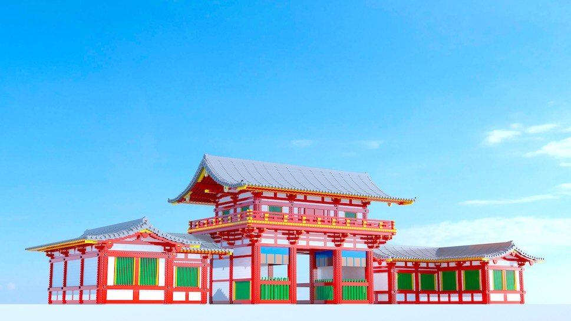
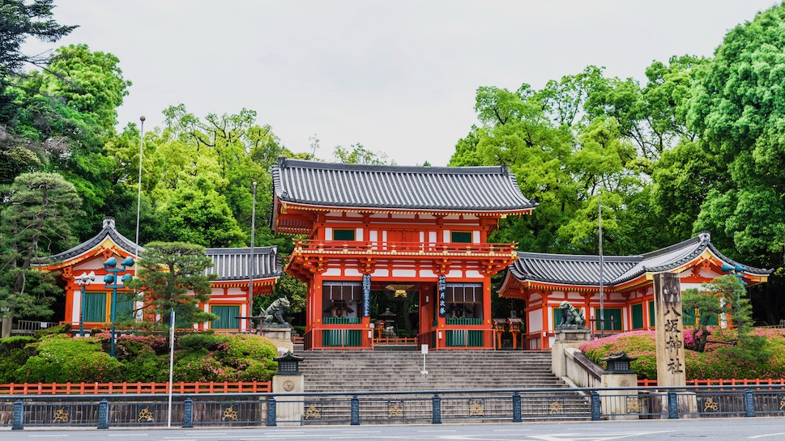
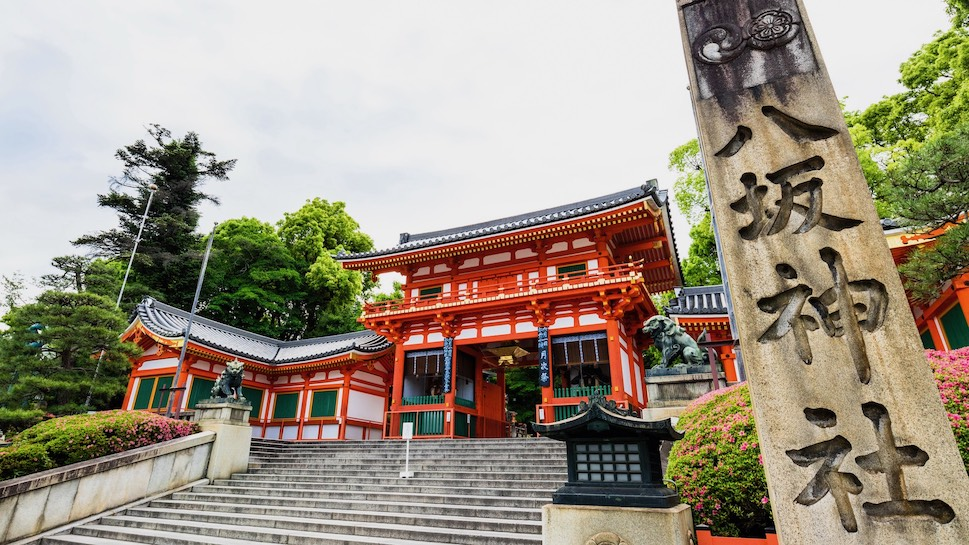
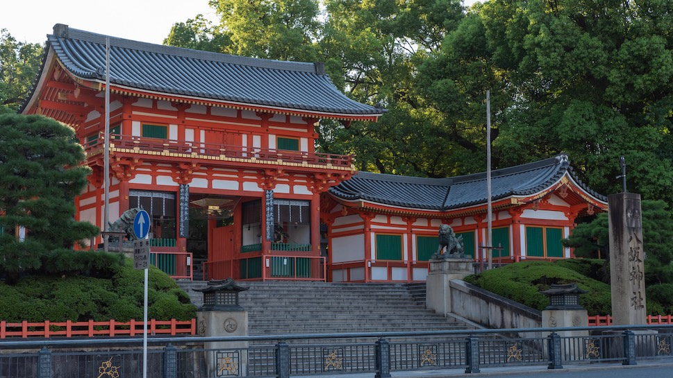
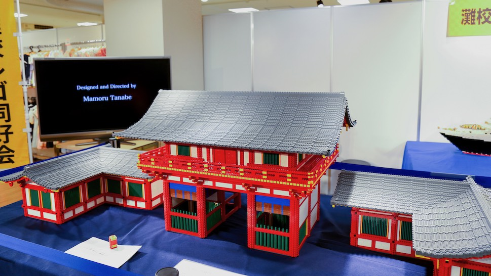
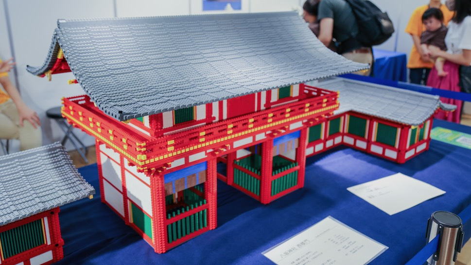
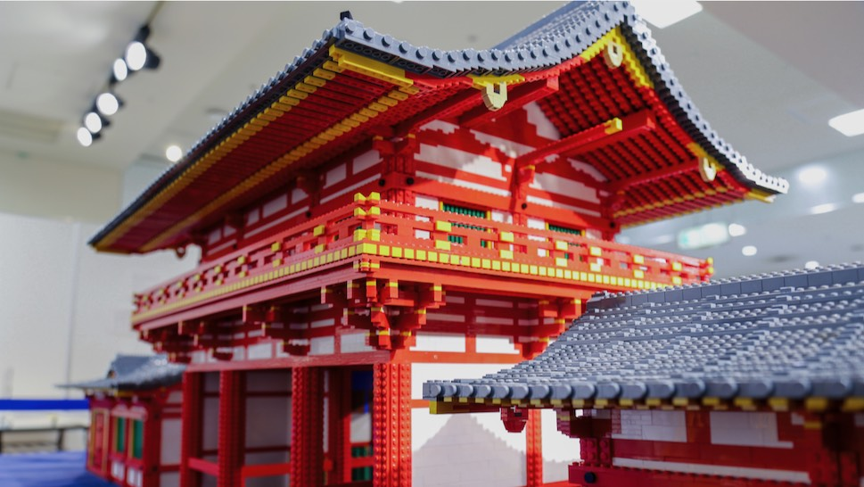
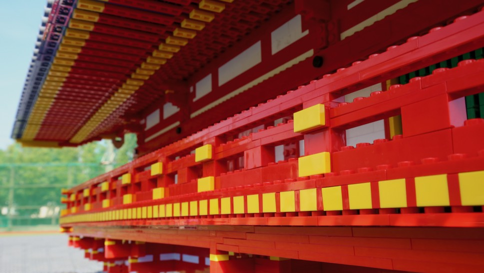
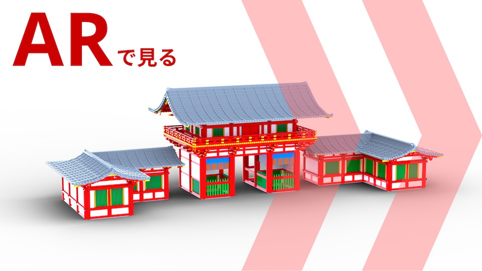

Yasaka Shrine West Gate




京都・祇園の八坂神社。鮮やかな朱色に塗られたその美しい姿で、四条通の正面に凛々しくずっしりと構えています。





【新作公開】京都・祇園の「八坂神社 西楼門」をLEGOで再現しました！！52,000ピースを使った大規模な作品でありながら、各所に技術をちりばめて細部までこだわりました中高5年間の集大成です！！全長 233.6cm（292studs）奥行 85.12cm（106.4 studs）全高 74.24cm（77.3bricks） pic.twitter.com/bnQfrIjiJu— mol (@mol_lego) April 12, 2020
【新作公開】京都・祇園の「八坂神社 西楼門」をLEGOで再現しました！！52,000ピースを使った大規模な作品でありながら、各所に技術をちりばめて細部までこだわりました中高5年間の集大成です！！全長 233.6cm（292studs）奥行 85.12cm（106.4 studs）全高 74.24cm（77.3bricks） pic.twitter.com/bnQfrIjiJu